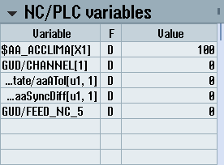

The "NC/PLC variables" widget displays the NC and PLC variables.
The variable name, data type and value are shown for each variable.
Only those variables that are currently displayed in the "NC/PLC variables" screen in the "Diagnostics" operating area are shown. To update the list in the "NC/PLC variables" widget following a change in the "NC/PLC variables" screen in the "Diagnostics" operating area, collapse and expand the widget again.
Vertical scrolling is possible.